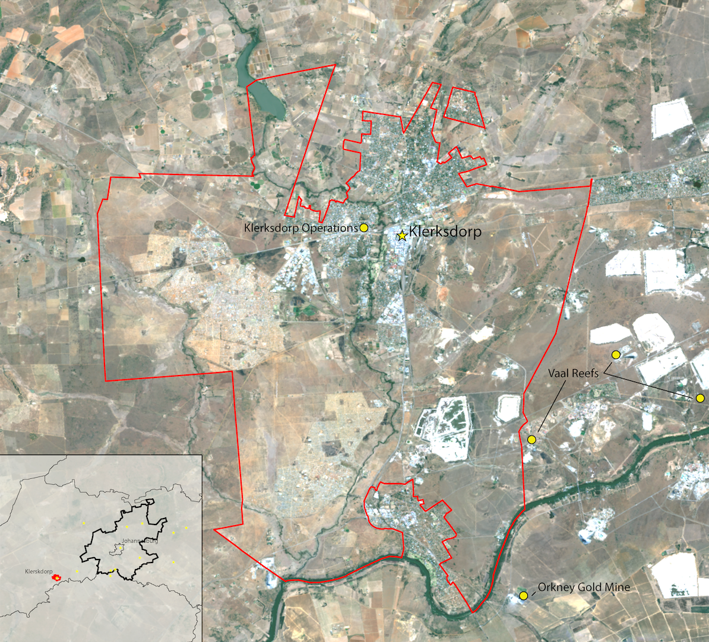
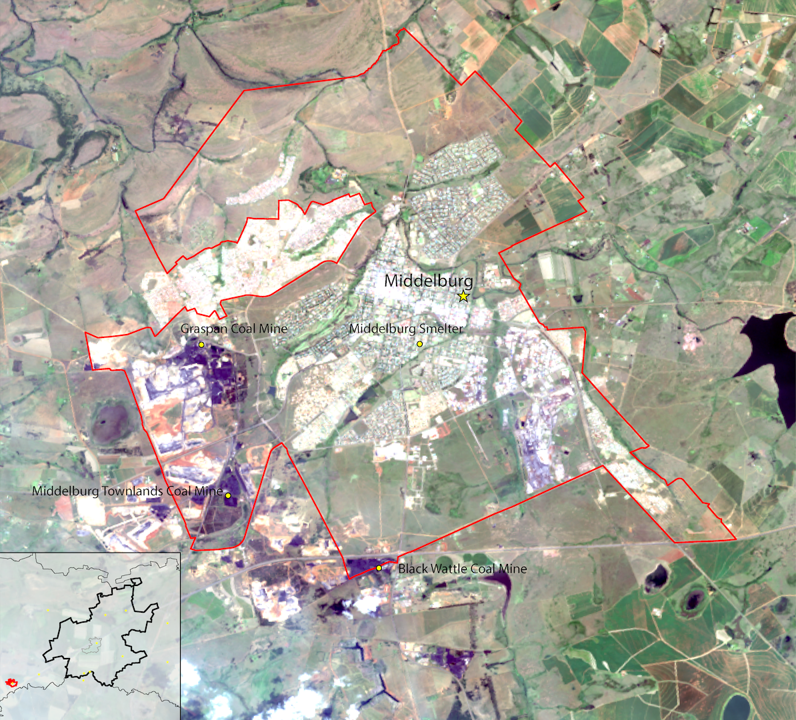
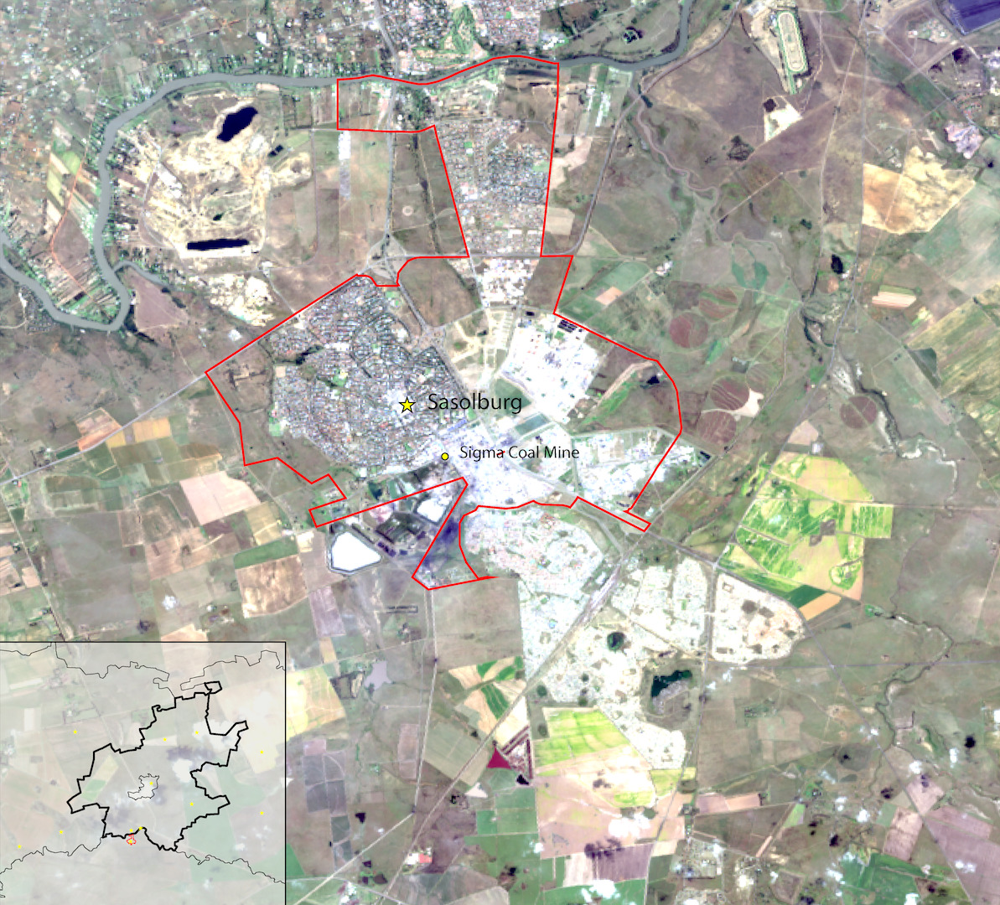

A miner in the Vall River Gold Mine outside of Klerksdorp, SA.
Source: http://www.miningeducation.com/
Source: http://www.miningeducation.com/
An Urban Agglomeration
Gauteng means a “Place of Gold,” a Sotho word that derived from the Dutch word for gold. This etymology embodies the colonial history of South Africa, a European precedent forced on subaltern African tribes. Gold was discovered in the region in 1886, making Gauteng the world’s largest producer, with Johannesburg at the nucleus.
1
Based on the primitive accumulation associated with the extraction and
production of Gold, Johannesburg became spatially stratified between the colonial and the subaltern, where the colonial was racially white and
the subaltern racially black.2
Post-apartheid spatial politics created a new element of segregation through class.3
In 2003, the Gauteng Spatial Planning Framework (GSDF) was developed to assist in the growth of the region. Continued production and extraction through the region's mining network promoted the need for a spatial and integral framework for the region to abide by. The Gauteng region is made up of a network of mining towns, which acts as a functionally connected and continuous urban agglomeration.
4
{kind=link}
Mining facilities in the Guateng region.
Source: Sean Nelson. Data Source: USGS, StatsSA,and Natural Earth
In recent years, the globalized economy has supported continued production and extraction within these peripheral towns. Sasolburg and Middelburg’s
coal production, Rustenberg’s platinum extraction, and Klerksdorp’s gold mines and uranium prospects, have propelled these small peripheral towns into
immense production. This new production requires a modern wage labor to aid in the productive processes.
Source: Sean Nelson. Data Source: USGS, StatsSA,and Natural Earth
Industry’s forcible attraction for labor in these towns carries the need for a definition and development of the spatial politics of the city. The dangerous nature of industrial employment, and South Africa’s dark history associated with mining, creates a contemporary perspective of biopower.
5
Where the contemporary subjugation is solely based on stratification through primitive accumulation, and the state’s acquiescence to this hegemony.
While Johannesburg experienced a 38 percent increase in its population, the peripheral mining towns of Klerksdorp, Middelburg, and Sasolburg saw population double, quintuple, and sextuple, respectively. That level of growth requires a planning framework for housing the labor force. These growing towns allow us to inquire about the spatial development typologies experienced in Johannesburg and other cities.
Through a spatial and temporal analysis of these peripheral towns, we can explore development typologies and determine if there is a continued racialization of space due to capital accumulation. Using Landsat technology, we can pinpoint the development changes in these three towns. South African census data will help provide a context of the people who inhabit these places.
Development Typologies
The emerging industry of mining in the Gauteng region created a spatial development derived on the extraction and production of Gold. The capital accumulation of the ore bifurcated the governance structure in the region and created a bipolar spatial arrangement between Pretoria and Johannesburg. Infrastructure networks were established in the region to link each production nucleus to Johannesburg.
6
The capital accumulation the accompanies a gold mining venture produced an extensive infrastructural network of rail and road. Coal shipments and metallic processing supported the technical machinery in extracting the gold. Commensurate with the mining industry, these infrastructural endeavors subverted the natural landscape, diverting and manipulating the Vaal River to act as a main water source in the region. The connection of these industries and developments created a “polynuclear structure” that defines the Gauteng region.
7
This regional operation “stands at the center of the nation’s infrastructural network… national roads, passenger and freight rail, road freight routes, gas and oil pipelines, electricity transmission lines, water transfer schemes, and national and international air corridors all converge on, or radiate from this region. Brian Larkin would define the poetics of this infrastructural network as the political acquiescence to capital, similar to Michel Foucault’s apparatus of governmentality.
Within each nucleus, the infrastructural developments have organized the space according to the operation of their respective industries. The disposition of these infrastructural developments placates to the capitalist endeavors of the region and exposes the political bearing in the folds of these developments.
8
This is apparent when looking singularly at a mining town on the periphery of the Gauteng region. When observing the growth and development of these towns, we can
detect the disposition of housing developments through analyzing their spatial growth in conjunction with a nuanced purview of the social aspects associated with the
lived experiences in these spatial developments.
9
10
11
Landsat Methodology
Using Landsat 7 and Landsat 8 images provided by the USGS, we can obtain images of the observed towns for years 2001 and 2011. The visualization of the development aligned with the census information will provide a nuanced look into how space was developed, and who populates these places. Due to functionality issues with Landsat 7, images obtained from this satellite after 2003 lack the quality needed to perform this analysis. Due to this methodological limitation, Landsat 8 was used for the spatial analysis using year 2014.
Remote sensing was used to identify areas of physical change in the respective cities between 2001 and 2014. This process uses multispectral bands to develop an RGB image, produced by measuring the reflection and radiation of a specific area through satellite sensors. The imaged produced is a multiple band amalgamation of several monochrome images. This allows a user options to adjust the which band aligns with which RGB color, in turn producing different image saturations and hues. Various combinations highlight certain phenomena experienced on the ground, but visualized through reflection and radiation.
Landsat 7, Spectral Bands 753 (left) and Landsat 8, Spectral Bands 764 (right).Source: Sean Nelson. Data Source: USGS.
In our analysis of the built environment, I used a false-color urban composite to evaluate changes in the built environment. Landsat 7 used band 7,5,3 and Landsat 8 used
bands 7,6,4 for their respective RGB colors. The purple, light blue, and white areas on the map represent the built environment. Through geoprocessing tools, a classification
for the images were set to the pixel colors that represent a type of environment. After classifying the pixels for both images, a raster calculator was used to see what
areas experienced development. An output of this calculator is seen in the image below as highlighted pixels.
Applying the social aspect to this visualization required the spatial analytical tools of GIS. First, thanks to the accessibility of the 2001 and 2011 South African Census provided by Adrian Frith, I was able to scrape demographic information for each town at the sub-place level. Joining the census information attribute table to a sub-place shapefile provided by South Africa, I was able to highlight specific demographic information at the sub-place level. This information allows us to see what populations occupy what space and where new development aligns with these social aspects. Finally, using Google Earth and Google Street view, we are able to further understand these spatial typologies and analyze the development characteristics of these towns.
Klerksdorp
The town of Klerksdorp, 80 miles southwest of Johannesburg, and the surrounding mines.Source: Sean Nelson. Data Source: USGS
Klerksdorp city was founded by Dutch Voortrekkers in 1837, who settled along the Schoonspruit River. Gold was eventually discovered in 1886, where the town experienced its
first population boom by prospective gold-seekers. During World War II, the town experienced another epoch of population growth as gold-mining industries resumed.12
Between 2001 and 2011, Klerksdorp has grown in population by 213 percent.13
Using remote sensing, developed land pixels were obtained through geoprocessing tools. Below is an image the denotes the change in the built environment; yellow represents land developed between 2001 and 2014.
{kind=link}
A map of Klerksdorp. Yellow areas indicate land that was developed between 2001 and 2014.Source: Sean Nelson. Data Source: USGS.
Aligning the remote sensing data with census data will help us understand what kind of development took place between 2001 and 2001. Population changes and racial demographics
obtained through the South African census create a holistic understanding of how the town developed during its third population boom.
{kind=link}
(From left to right) Total, Black, and White Population growth in Klerksdorp between 2001 and 2011.Source: Sean Nelson. Data Source: USGS, StatsSA.
We can see that there is a correlation between newly developed land and the racialization of space. Growth in Klerksdorp supported an influx of Black Africans, where
the spatial development to accommodate this population, was largely on the periphery of the town. The sprawl and fragmentation development typology experienced by Klerksdorp
directly refutes the GSDF’s planning framework.
Using satellite images and Google Street View, we can look into the building typologies of the newly developed areas and the historic town, as well as, racialized spaces identified in the census information.
{kind=link}
Predominantly black (top row) and white (bottom row) neighborhoods in the town of Klerksdorp.Source: Google Earth
Middelburg
The town of Middelburg, 40 miles south of Johannesburg, and the surrounding mines.Source: Sean Nelson. Data Source: USGS
Middelburg is a farming and industrial town northeast of Johannesburg, and was founded by Voortrekkers in 1864. During the Second Boer War, the British built a concentration camp in the town. With its dark history during the Second Boer War, existence in apartheid South Africa, and coal mining operations, Middelburg has a long history of hosting violence on the body. 14
{kind=link}
A map of Middelburg. Yellow areas indicate land that was developed between 2001 and 2014.Source: Sean Nelson. Data Source: USGS.
The development of Middelburg does not display large peripheral additions as seen in Klerksdorp. There are two noticeable developments on the periphery,
one south and one north, that are also extensions of older extant urban environments. The largest area of residential development is adjacent to the town’s
core. Remote sensing also picks up the development of the coal mining industry, southwest of the town, that occurred between 2001 and 2011. Unsurprisingly,
most the new development occurred where the population growth occurred. The development also seems to be dispersed over sub places with varying racial breakdowns.
However, the sub places highlight the racialization of space, where a northern sub places have higher concentrations of Black Africans, central and southern areas
have higher concentration of a White population.
{kind=link}
(From left to right) Total, Black, and White Population growth in Middelburg between 2001 and 2011.Source: Sean Nelson. Data Source: USGS, StatsSA.
Looking at the details provided by the satellite images and street view, we can see that there is an obvious difference between the new developments along racial
lines. I took two sub places that experienced development detected in the remote sensing process, and specified one with a high percentage of Black Africans, and
one with a high percentage of Whites. As you can see, the satellite displays a higher density, with less vegetation, differing building materials, and differing
building typology. Though this is not a holistic analysis of the new developments, there is a distinct stratification through this examination.
{kind=link}
Predominantly black (top row) and white (bottom row) neighborhoods in the town of Middleburg.Source: Google Earth
Sasolburg
The town of Sasolburg, 80 miles northeast of Johannesburg, and the surrounding mines.Source: Sean Nelson. Data Source: USGS
Sasolburg is an industrial town located southwest of Johannesburg. The town was founded in 1954 as a residential development that housed the employees of
the Sasol refinery. Sasol operated to refine oil from coal production, due to a deficiency in petroleum reserves. During the embargo enacted upon the
apartheid state of South Africa, the government supported the refinery for oil production. The very existence of the plant is an essential support of
the apartheid state, where the protracted production of oil from coal was more important than reviewing a humanitarian crisis. It is also interesting
to note that the town was named after the energy and chemical company. This exposes the disposition of this infrastructural development of the town,
where there lies an (ostensibly) undisclosed political relevance in the infrastructure space.15
{kind=link}
Sasolburg. Landsat 8, 2014, Spectral Bands 432. USGS.
Based on the remote sensing output, we can identify most urban development occurred on the southern periphery of the town, with minimal infill development
in the historic north. The development seemingly has occurred in areas where the sub place displays a population growth, but that correlation is not
extremely apparent. When overlaying the development over racial demographics, there doesn’t seem to be a specific relationship between development and
demographics. However, most development was in an area that does not contain census information. We can see that this development is directly adjacent
sub places that contain high percentage of Black Africans. With this information, and that fact that the new development has occurred far from sub places
with large White populations, we can assume that the development occurred in an area with a high percentage of Black Africans.
{kind=link}
2001 and 2011 Census Data, StatsSA. Accessed via Adrian Frith.
Looking at the satellite and street view images, we can see the contrast between new spaces and old paces. The spatial layout, infrastructure materiality,
and housing typologies differ greatly.
{kind=link}
Predominantly black (top row) and white (bottom row) neighborhoods in the town of Sasolburg.Source: Google Earth.
Biopolitical Development
The materiality associated with the old and new areas detailed in the satellite images and street view scenes shows a contrast between the spatial politics of peripheral mining town - new and old spaces, Black and White spaces. Mapping growth over layers of demographic characteristics, we can see the new development is occurring in areas of population growth, specifically concentrations of Black South Africans. This information, along with the knowledge of the expansion of industries in these towns, denotes a type of spatial expansion that is specific to the mobilization of a labor force. Due to the insidious and abrasive effects of these industries on the bodies of the wage labor, we can assume that this apparatus of infrastructure was specifically developed as biopower. The informality of the material used in new developments where large Black African populations reside is commensurate with the perception of expendability of the worker and their exclusion from modernity.
16
Please note: footnotes not visible on mobile.
Return to Student Projects